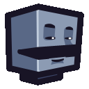
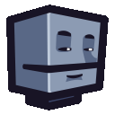

<div class="instructions">
  <b>Instructions</b>
  <ol>
    <li>Use supported browser</li>
    <li>Enable/Allow Microphone</li>
    <li>Talk</li>
  </ol>
  <span id="error"></span>
</div>




<style>
* {
  margin: 0;
  overflow: hidden;
}

body {
  background-color: black;
}

.catImg {
  position: absolute;
  top: 0;
  left: 0;
  width: 100vw;
  height: 100vh;
  object-fit: contain;
}

.instructions {
  color: white;
  font-family: sans-serif;
  font-size: 30px;
  position: absolute;
  top: 50%;
  left: 50%;
  transform: translate(-50%, -50%);
}

.instructions ol {
  list-style: none;
  counter-reset: li;
}
li {
  counter-increment: li;
}
li::before {
  content: counter(li) '. ';
  color: white;
  width: 1em;
}

.hide {
  display: none;
}

</style>

<script type="module">
import rnnoise from './rnnoise.js';


const $ = document.querySelector.bind(document);

// get the current user's audio stream
function getAudioStream() {
  return navigator.mediaDevices.getUserMedia({audio: true});
}

// analyse some text (not with a z because we're examining the audio input!)
async function analyse(stream, hasDetector=false) {
  // create context, analyser, source, and script processor
  const context = new AudioContext();
  const analyser = context.createAnalyser();
  const source = context.createMediaStreamSource(stream);
  const processor = context.createScriptProcessor(512, 1, 1);

  // import the wasm
  const {_rnnoise_create: createNoise, _free: free, _malloc: malloc, _rnnoise_process_frame: processNoise, _rnnoise_destroy: destroyNoise, HEAPF32} = await rnnoise();

  // rnnoise takes 480 PCM float32 samples
  const SAMPLE_LENGTH = 480;
  const BUFFER_SIZE = SAMPLE_LENGTH * 4;

  // create pcm buffers
  const pcmInputBuf = malloc(BUFFER_SIZE);
  if (!pcmInputBuf) { throw Error('failed to create input buff'); }
  const pcmOutputBuf = malloc(BUFFER_SIZE);
  if (!pcmOutputBuf) { free(pcmInputBuf); throw Error('failed to create output buff'); }
  const pcmInputIndex = pcmInputBuf / 4;

  // create the noise
  let rnn = createNoise();

  // cleanup memory from wasm
  const destroy = () => {
    if (!rnn) return;
    pcmInputBuf && free(pcmInputBuf);
    pcmOutputBuf && free(pcmOutputBuf);
    destroyNoise(rnn);
    rnn = 0;
  };
  // .. on window close
  window.addEventListener('onunload', destroy);

  // process a frame in rnnoise
  const processFrame = sample => {
    for (const [i, value] of sample.entries()) sample[i] = value * 0x7fff;
    HEAPF32.set(sample, pcmInputIndex);
    return processNoise(rnn, pcmOutputBuf, pcmInputBuf);
  }

  // container for leftover audio process data
  let bufferResidue = new Float32Array([]);

  let open = false;

  processor.onaudioprocess = e => {
    // proces data based on the sample length, use leftover buffer from previous process
    const inData = [ ...bufferResidue, ...e.inputBuffer.getChannelData(0) ];
    let i = 0;

    // process each viable sample
    for (; i + SAMPLE_LENGTH < inData.length; i += SAMPLE_LENGTH) {
      const sample = inData.slice(i, i + SAMPLE_LENGTH);
      const value = processFrame(sample);
      const nowOpen = value > 0.99;
      if (nowOpen !== open) {
        $(open ? '#catOpen' : '#catClosed').classList.add('hide');
        $(!open ? '#catOpen' : '#catClosed').classList.remove('hide');
        open = nowOpen;
      }
    }

    bufferResidue = inData.slice(i);
  };

  // connect everything together
  source.connect(analyser);
  analyser.connect(processor);
  processor.connect(context.destination);

  // bins for the frequency renderer
  const buffLen = analyser.frequencyBinCount;
  const dataArray = new Uint8Array(buffLen);

  return ctx => {};
}

// setup the canvas for drawing
function setupCanvas(elem) {
  const ctx = elem.getContext('2d');
  elem.style.border = '4px solid black';
  elem.style.width = (ctx.canvas.width = 400) + 'px';
  elem.style.height = (ctx.canvas.height = 200) + 'px';
  return ctx;
}

let started = false;

const start = (async () => {
  if (started) return;
  try {
    // get the audio stream
    const stream = await getAudioStream();

    // process the sound
    const soundDraw = await analyse(stream, true);
    started = true;
  } catch (e) {
    $('#error').innerText = 'Error: ' + e.message;
  }

});

start();

document.body.addEventListener('click', start);

</script>
